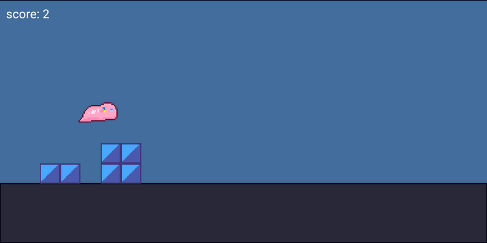
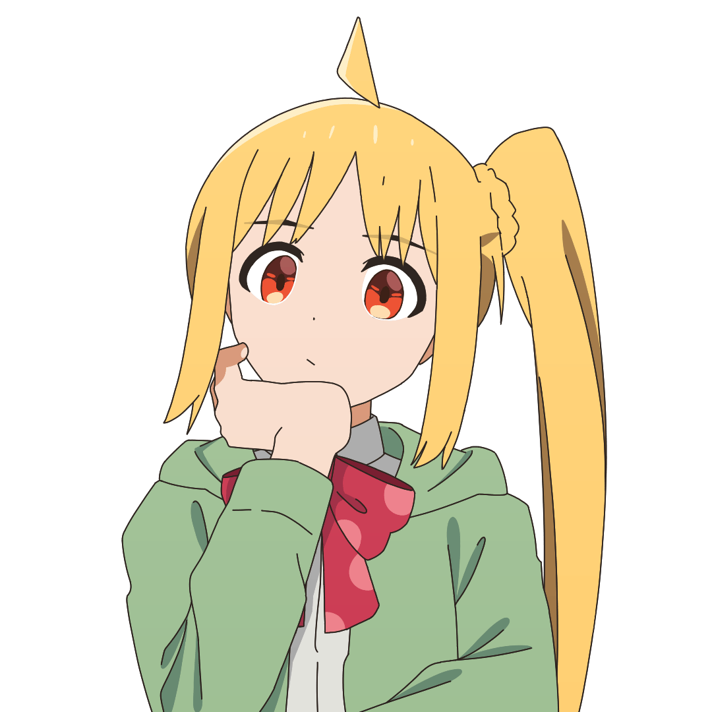
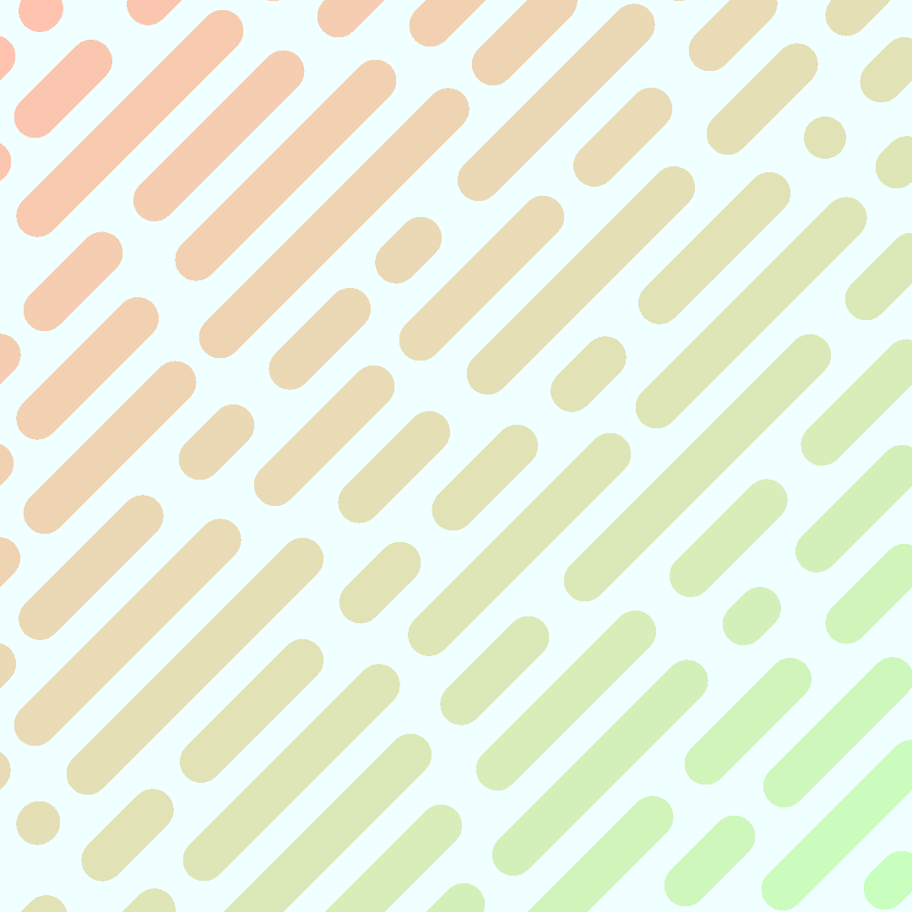

Я с детства хотел создавать игры, поэтому, когда на уроках информатики мы стали изучать программирование, я очень увлёкся этим. Со временем я даже начал делать фанатскую игру «Bocchi The Platformer», но, к сожалению, так и не смог закончить.

Анимация
Будучи подростком, я начал смотреть аниме и мгновенно влюбился в анимацию и сакугу. С тех пор я пытаюсь подражать японским мастерам и делаю анимации, которыми делюсь в своих социальных сетях.

Музыка
Я просто люблю создавать небольшие мелодии. Я не назову это своим пристрастием, но это определённо что-то чем мне нравится заниматься.

Программирование
Я с детства хотел создавать игры, поэтому, когда на уроках информатики мы стали изучать программирование, я очень увлёкся этим. Со временем я даже начал делать фанатскую игру «Bocchi The Platformer», но, к сожалению, так и не смог закончить.
Анимация
Будучи подростком, я начал смотреть аниме и мгновенно влюбился в анимацию и сакугу. С тех пор я пытаюсь подражать японским мастерам и делаю анимации, которыми делюсь в своих социальных сетях.
Музыка
Я просто люблю создавать небольшие мелодии. Я не назову это своим пристрастием, но это определённо что-то чем мне нравится заниматься.
Спасибо что посетили страницу!
Если вы заинтересовались во мне, вы можете посетить мои другие страницы в соцсетяхПодпишитесь на YouTube и Tiktok где я публикую свои анимации.
Следите за мной в Twitter и Tumblr, я делюсь там артами.
Посетите мою страницу в itch.io, «Bocchi The Platformer» уже там, а также другие проэкты.
И я очень буду вам благодарен если вы поддержите меня на Buy Me A Coffee или Boosty.